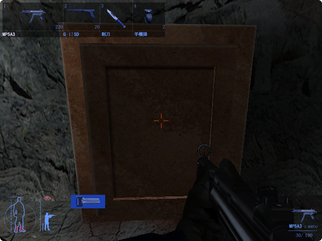
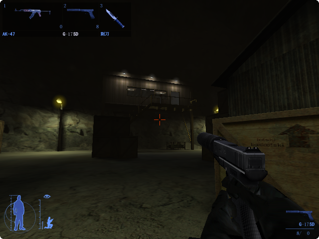
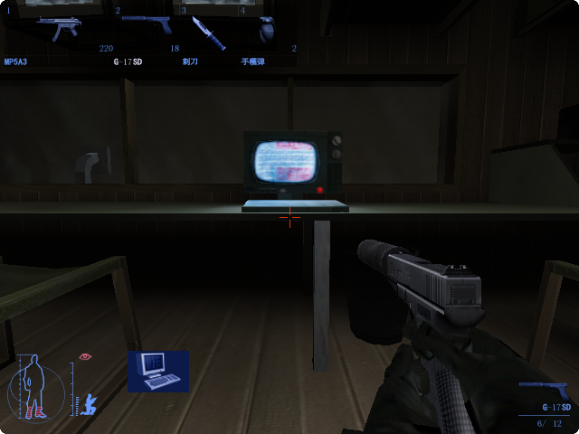
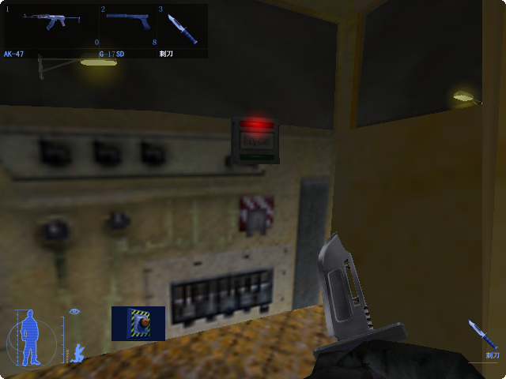
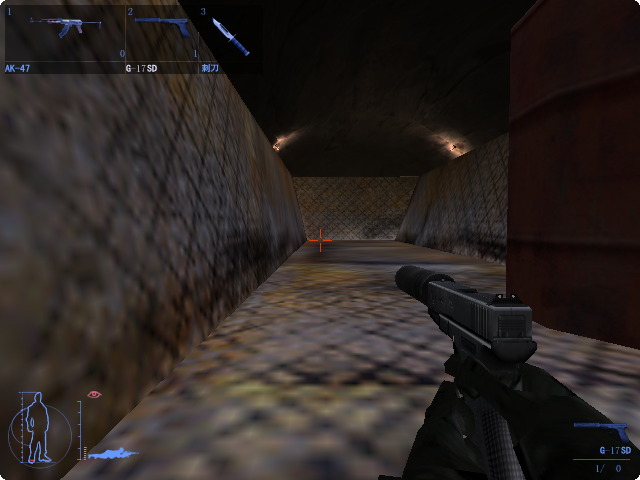
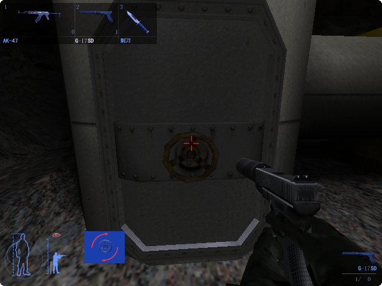

升降平台停下后，前进到洞口前，可以看到守卫向右走过去。
等下次他返回，走到最左侧和左侧守卫谈话的时候，匍匐前进到卡车右侧的阴影里。
打开红色的门，一路下到底。

蹲下并借助阴影和箱子前进，前往这个建筑物的2楼警卫室关闭警报系统。

游戏中光照很重要，尽量待在箱子、障碍物等附近光照低的地方。
蹲下前进，来到计算机前面，关掉安全系统。（不要惊动厕所里的守卫）顺带搜刮架子上的手榴弹。

下楼后，蹲下绕到隧道入口处的守卫右后方，用匕首解决掉。 注意不要进入摄像头的区域和对面两个巡逻的守卫。
打开守卫旁边的开关，开启隧道入口处的铁门。
通过热成像仪观察对面2个巡逻守卫的活动，
看到2个守卫都远离后，跳上火车驾驶室，打开开关，启动火车。

跳上最后一节车厢，在铁桶旁边趴下不要动，躲过另一辆载着守卫的火车的追击。

火车停下以后，从车厢尾部跳下火车，往回走，打开通风管道的开关进入，过关。
